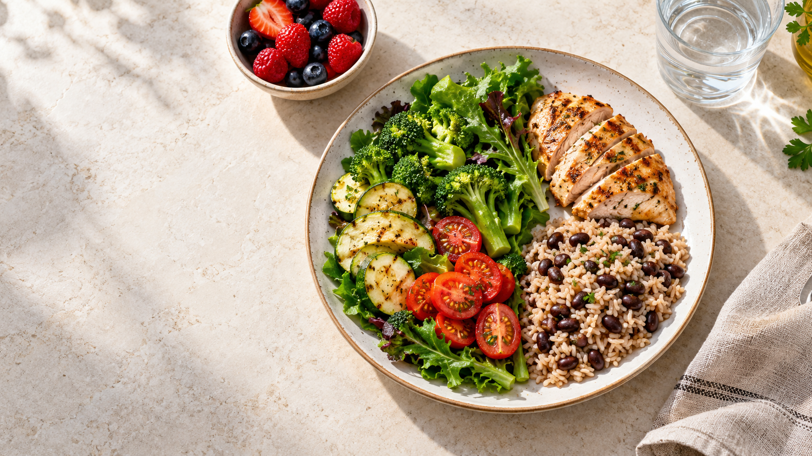

Comece por aqui
Comida de verdade, sabor e praticidade.
Receitas simples para variar o cardápio e montar refeições equilibradas, com porções claras e ingredientes encontrados no dia a dia.

Base do material
O método visual do prato
Uma referência simples para organizar o almoço e o jantar. Necessidades individuais podem variar conforme medicação, atividade física e orientação profissional.
½ pratoVegetais sem amido: folhas, brócolis, abobrinha, tomate, couve-flor e berinjela.
¼ do pratoProteína: frango, peixe, ovos, tofu ou carne magra.
¼ do pratoCarboidrato de qualidade: feijão, lentilha, arroz integral, quinoa ou tubérculos.
Caderno de cozinha
8 receitas para usar na semana
Cada preparo rende duas porções, salvo indicação diferente. Ajuste sal, textura e quantidade conforme sua orientação individual.
Omelete verde com ricota
Ingredientes
- 4 ovos
- 1 xícara de espinafre picado
- ½ tomate em cubos
- 3 colheres de ricota
- Ervas, pimenta e 1 fio de azeite
Preparo
- Bata os ovos e misture os temperos.
- Refogue rapidamente o espinafre e o tomate.
- Adicione os ovos, distribua a ricota e cozinhe tampado até firmar.
Iogurte com chia e frutas vermelhas
Ingredientes
- 2 potes de iogurte natural sem açúcar
- 2 colheres de chia
- ½ xícara de morangos e mirtilos
- 2 colheres de nozes picadas
- Canela a gosto
Preparo
- Misture o iogurte com a chia.
- Finalize com as frutas, nozes e canela.
- Espere 10 minutos para a chia hidratar, se preferir.
Confira o rótulo do iogurte e escolha uma versão sem açúcar adicionado.
Frango cítrico com legumes
Ingredientes
- 240 g de peito de frango em tiras
- 1 abobrinha e ½ pimentão
- 1 xícara de brócolis
- Suco de ½ limão
- Alho, páprica e azeite
Preparo
- Tempere o frango com limão, alho e páprica.
- Doure em frigideira quente.
- Junte os legumes e cozinhe até ficarem macios, porém firmes.
Complete o prato com uma porção de feijão ou arroz integral definida para você.
Peixe assado com crosta de ervas
Ingredientes
- 2 filés de peixe
- 1 colher de farelo de aveia
- Salsinha, limão e alho
- 1 colher de azeite
- Couve-flor e vagem para acompanhar
Preparo
- Misture farelo, ervas, alho e azeite.
- Cubra os filés e asse a 200 °C por cerca de 20 minutos.
- Sirva com os vegetais cozidos ou assados.
Salada morna de lentilha
Ingredientes
- 1 xícara de lentilha cozida
- ½ berinjela em cubos
- 1 tomate e folhas verdes
- ½ cebola roxa
- Limão, azeite e cheiro-verde
Preparo
- Asse ou grelhe a berinjela e a cebola.
- Misture com a lentilha ainda morna.
- Junte tomate, folhas e temperos no momento de servir.
Lentilha contém carboidrato e proteína; considere isso no planejamento da refeição.
Sopa cremosa de abóbora e frango
Ingredientes
- 3 xícaras de abóbora em cubos
- 200 g de frango cozido e desfiado
- 1 cenoura pequena
- Gengibre, alho e cebola
- Couve fatiada
Preparo
- Cozinhe abóbora e cenoura com os temperos.
- Bata até formar um creme e volte à panela.
- Acrescente frango e couve; cozinhe por mais 5 minutos.
Patê de atum com crocantes
Ingredientes
- 1 lata de atum em água, escorrido
- 3 colheres de iogurte natural
- Limão, salsinha e pimenta
- Palitos de pepino, cenoura e salsão
Preparo
- Misture atum, iogurte e temperos.
- Leve à geladeira por 15 minutos.
- Sirva com os vegetais crus.
Creme de cacau e abacate
Ingredientes
- 1 abacate pequeno maduro
- 2 colheres de cacau 100%
- Canela e baunilha
- Adoçante culinário opcional
Preparo
- Bata todos os ingredientes até obter um creme liso.
- Divida em quatro potes pequenos.
- Sirva gelado e conserve por até 24 horas.
Mesmo sem açúcar adicionado, a porção continua importante.
Antes de mudar sua alimentaçãoEste material é educativo e não substitui plano alimentar individualizado. Pessoas que usam insulina ou medicamentos que podem causar hipoglicemia devem alinhar mudanças de quantidade e horário com médico ou nutricionista. Não interrompa medicamentos.